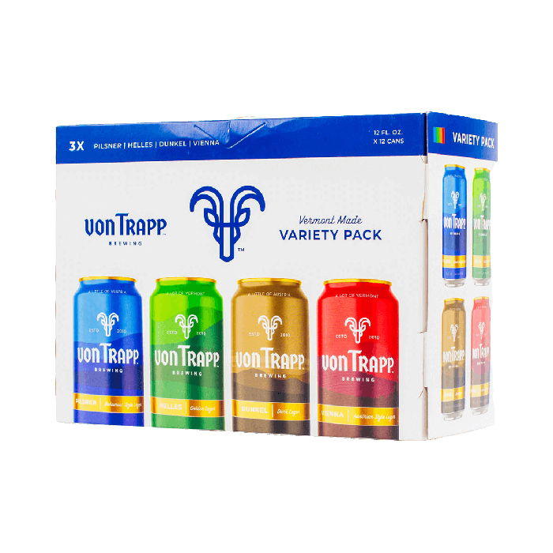
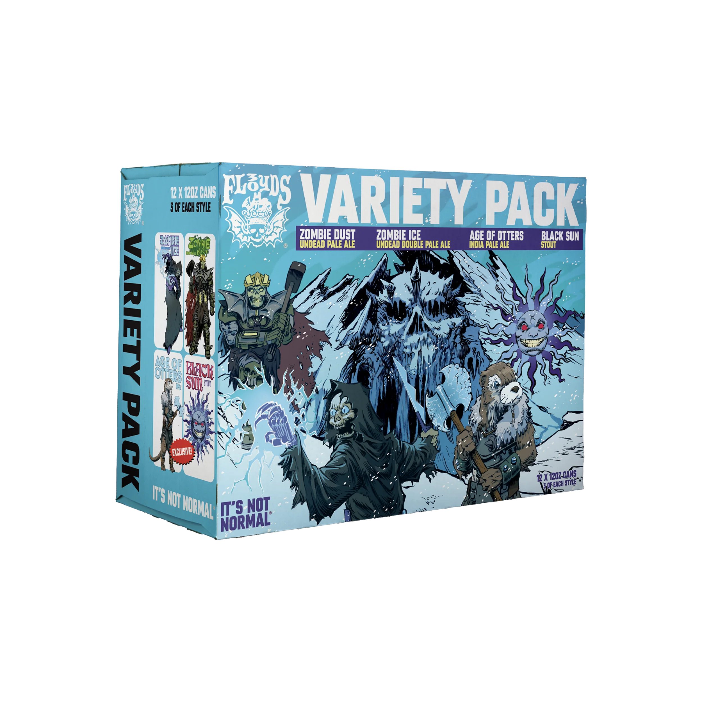

🍺 vonTrapp Variety Pack
Quality: 4/5
Variety: 5/5
Overall: 4.5/5
My personal favorite variety pack. Each of the beers is excellent, my personal favorite being the Dunkel with its rich malty flavor. Additionally, I think this is the variety pack with the best balance of different styles. The two light beers and two more malty beers make this a year-round option. If you want an IPA in your variety pack you might stay away but otherwise I can't recommend it highly enough.

🍺 vonTrapp Variety Pack
Quality: 5/5
Variety: 2.5/5
Overall: 4/5
The other variety pack that I am certain will satisfy all your beer needs. It has two of my personal favorite IPAs with the Zombie Dust and Zombie Ice being in an elite class of IPAs. The age of otters is a good IPA but it is overshadowed by the Zombie Dust and Zombie Ice. However, the fourth beer is an excellent stout that adds a much needed variety to the variety pack. It is a great stout and will be sure to satisfy your dark beer needs not otherwise met in this variety pack.
Of note there are numerous Three Floyds Variety Packs. I have not had them all yet but will be sure to update the site as I try them.